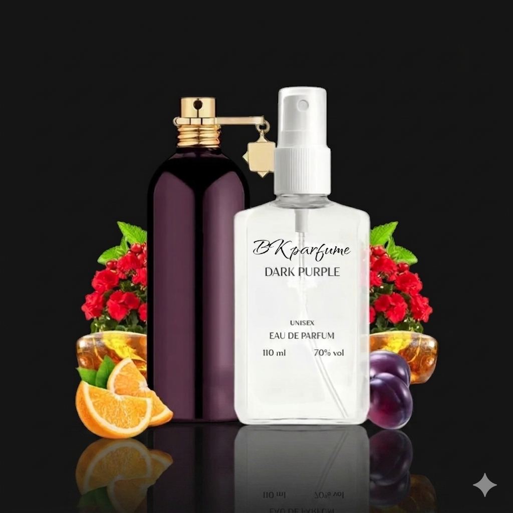

Бренд: BKparfume
Категорія: унісекс аромати
Об'єм: 110 мл
Ціна: 160 грн
Темно-пурпурна чорниця і троянда — романтичний і трохи темний фруктово-квітковий аромат.
BKparfume Dark Purple добре працює для тих, хто шукає універсальне звучання без жорсткої прив'язки до класичної жіночої або чоловічої групи. Завдяки формату 110 мл цей аромат зручно брати як основний варіант на сезон або додавати до особистої колекції для окремих ситуацій.
Унісекс-композиції зручно обирати, якщо вам подобаються чисті деревні, мускусні, нішеві або фруктово-амброві профілі. Якщо ви підбираєте схожі композиції, перегляньте також сторінку з жіночими парфумами на розлив та каталог ароматів BK Parfume.
Ноти аромату
- Верхні: чорниця, смородина
- Серцеві: троянда, пачулі
- Базові: мускус, ваніль
Як замовити
Ви можете перейти у каталог з уже відкритим релевантним фільтром, додати аромат у кошик та оформити замовлення з доставкою по Україні. Для оптових або комбінованих замовлень також діють вигідніші ціни за кількість.